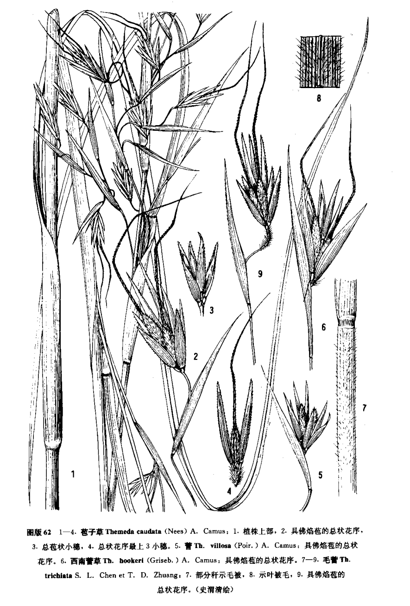

出现篇目
古代记载
《毛传》
白华，野菅也。已沤为菅。（《毛传》注《白华》）
《毛诗正义》
正义曰：《释草》云：“白华，野菅。”郭璞曰：“茅属白华。”笺云：“人刈白华于野，已沤之，名之为菅。”然则菅者已沤之名，未沤则但名为茅也。陆机《疏》云：“菅似茅，而滑泽无毛，根下五寸中有白粉者柔韧，宜为索，沤乃尤善矣。”（《毛传》疏《东门之池》）
《诗集传》
菅、葉似茅而滑澤。莖有白粉、柔韌。宜爲索也。（《诗集传》集注《东门之池》）
《毛诗草木鸟兽虫鱼疏》
菅，似茅而滑泽，无毛，根下五寸中有白粉者，柔韧宜为索沤，及曝尤善也。
当代记载
《中国植物志》
白茅（ Imperata cylindrica），禾本科，白茅属植物。多年生，具粗壮的长根状茎。花果期4-6月。产于辽宁、河北、山西、山东、陕西、新疆等北方地区；生于低山带平原河岸草地、沙质草甸、荒漠与海滨。也分布于非洲北部、土耳其、伊拉克、伊朗、中亚、高加索及地中海区域。

<中国植物志>